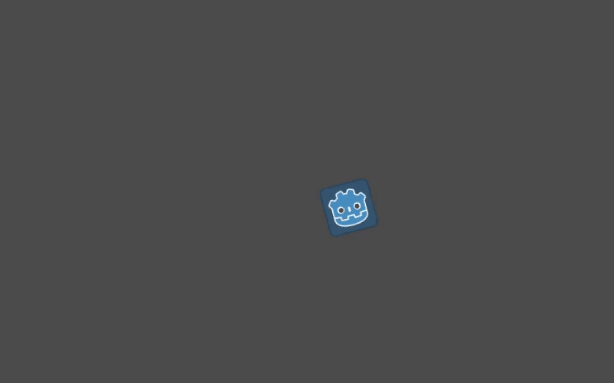

Listening to player input
Building upon the previous lesson, Creating your first script, let's look
at another important feature of any game: giving control to the player.
To add this, we need to modify our sprite_2d.gd code.

You have two main tools to process the player's input in Godot:
The built-in input callbacks, mainly
_unhandled_input(). Like_process(), it's a built-in virtual function that Godot calls every time the player presses a key. It's the tool you want to use to react to events that don't happen every frame, like pressing Space to jump. To learn more about input callbacks, see Using InputEvent.The
Inputsingleton. A singleton is a globally accessible object. Godot provides access to several in scripts. It's the right tool to check for input every frame.
We're going to use the Input singleton here as we need to know if the player
wants to turn or move every frame.
For turning, we should use a new variable: direction. In our _process()
function, replace the rotation += angular_speed * delta line with the
code below.
var direction = 0
if Input.is_action_pressed("ui_left"):
direction = -1
if Input.is_action_pressed("ui_right"):
direction = 1
rotation += angular_speed * direction * delta
var direction = 0;
if (Input.IsActionPressed("ui_left"))
{
direction = -1;
}
if (Input.IsActionPressed("ui_right"))
{
direction = 1;
}
Rotation += _angularSpeed * direction * (float)delta;
Our direction local variable is a multiplier representing the direction in
which the player wants to turn. A value of 0 means the player isn't pressing
the left or the right arrow key. A value of 1 means the player wants to turn
right, and -1 means they want to turn left.
To produce these values, we introduce conditional statements and the use of Input.
A conditional statement starts with the if keyword in GDScript and ends with a colon. The
condition is specifically the expression between the keyword and the colon at
the end of the line.
To check if a key was pressed this frame, we call Input.is_action_pressed().
The method takes a text string representing an input action and returns true
if the action is pressed, false otherwise.
The two actions we use above, "ui_left" and "ui_right", are predefined in every Godot project. They respectively trigger when the player presses the left and right arrows on the keyboard or left and right on a gamepad's D-pad.
Note
You can see and edit input actions in your project by going to and clicking on the Input Map tab.
Finally, we use the direction as a multiplier when we update the node's
rotation: rotation += angular_speed * direction * delta.
Comment out the lines var velocity = Vector2.UP.rotated(rotation) * speed and position += velocity * delta like this:
#var velocity = Vector2.UP.rotated(rotation) * speed
#position += velocity * delta
//var velocity = Vector2.Up.Rotated(Rotation) * _speed;
//Position += velocity * (float)delta;
This will ignore the code that moved the icon's position in a circle without user input from the previous exercise.
If you run the scene with this code, the icon should rotate when you press Left and Right.
Moving when pressing "up"
To only move when pressing a key, we need to modify the code that calculates the
velocity. Uncomment the code and replace the line starting with var velocity with the code below.
var velocity = Vector2.ZERO
if Input.is_action_pressed("ui_up"):
velocity = Vector2.UP.rotated(rotation) * speed
var velocity = Vector2.Zero;
if (Input.IsActionPressed("ui_up"))
{
velocity = Vector2.Up.Rotated(Rotation) * _speed;
}
We initialize the velocity with a value of Vector2.ZERO, another
constant of the built-in Vector type representing a 2D vector of length 0.
If the player presses the "ui_up" action, we then update the velocity's value, causing the sprite to move forward.
Complete script
Here is the complete sprite_2d.gd file for reference.
extends Sprite2D
var speed = 400
var angular_speed = PI
func _process(delta):
var direction = 0
if Input.is_action_pressed("ui_left"):
direction = -1
if Input.is_action_pressed("ui_right"):
direction = 1
rotation += angular_speed * direction * delta
var velocity = Vector2.ZERO
if Input.is_action_pressed("ui_up"):
velocity = Vector2.UP.rotated(rotation) * speed
position += velocity * delta
using Godot;
public partial class MySprite2D : Sprite2D
{
private float _speed = 400;
private float _angularSpeed = Mathf.Pi;
public override void _Process(double delta)
{
var direction = 0;
if (Input.IsActionPressed("ui_left"))
{
direction = -1;
}
if (Input.IsActionPressed("ui_right"))
{
direction = 1;
}
Rotation += _angularSpeed * direction * (float)delta;
var velocity = Vector2.Zero;
if (Input.IsActionPressed("ui_up"))
{
velocity = Vector2.Up.Rotated(Rotation) * _speed;
}
Position += velocity * (float)delta;
}
}
If you run the scene, you should now be able to rotate with the left and right arrow keys and move forward by pressing Up.
Summary
In summary, every script in Godot represents a class and extends one of the
engine's built-in classes. The node types your classes inherit from give you
access to properties, such as rotation and position in our sprite's case.
You also inherit many functions, which we didn't get to use in this example.
In GDScript, the variables you put at the top of the file are your class's properties, also called member variables. Besides variables, you can define functions, which, for the most part, will be your classes' methods.
Godot provides several virtual functions you can define to connect your class
with the engine. These include _process(), to apply changes to the node
every frame, and _unhandled_input(), to receive input events like key and
button presses from the users. There are quite a few more.
The Input singleton allows you to react to the player's input anywhere in
your code. In particular, you'll get to use it in the _process() loop.
In the next lesson, Using signals, we'll build upon the relationship between scripts and nodes by having our nodes trigger code in scripts.